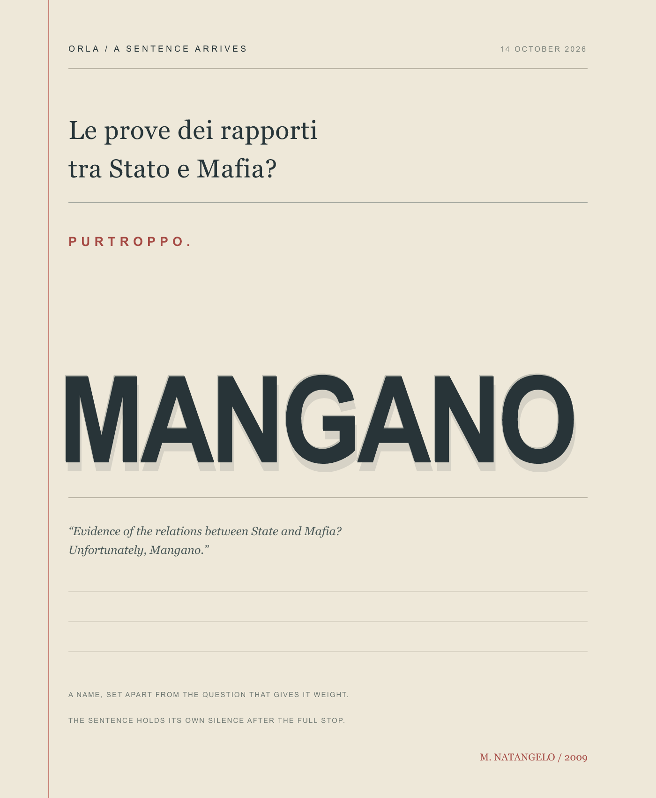

ORLA / A CHANCE ARRIVAL / 14 OCTOBER 2026
A Name in the Margin

The chance line reads: “Le prove dei rapporti tra Stato e Mafia? Purtroppo Mangano.” My translation: “Evidence of the relations between State and Mafia? Unfortunately, Mangano.” I set the surname as an echo: one name asked to bear the weight of the question, then left in silence.
The inbox filed the sentence under Vittorio Mangano, but Italian Wikiquote attributes this line to cartoonist Mario Natangelo. The attribution page dates it to Il Fatto Quotidiano, 20 November 2009. The drawing makes no claim about evidence or the people named; it stays with the sentence's construction.
Sources: Italian Wikiquote · quote attribution and date.
Return to the studio